How I built animatronic angel wings
or, a step by step guide of how I spent a sleepless night making naturally folding wings, from research to completion!
For a recent music video project, I was tasked with making a set of animatronic angel wings because the title of the song was ‘Seraphim’. In Christianity (or at least the medieval form of it), a Seraphim has 6 wings and cares for God’s throne while flying around and saying ‘holy, holy, holy’ over and over again, and the final video had a lot of old style religious symbolism inside of it. We needed to make the singer become one of these Seraphim and, luckily, she already had two wings tattooed on her chest so we were already part way there! All that I had to do was make the other two sets… Full size… and fully capable of opening and closing in a natural motion… It was a very interesting challenge, mildly insane given the time frame that I had, and I hope you enjoy a look behind the scenes of my process in how this is done!
Before I get into the meat of all of this, I did want to give a lot of credit to Alexis Noriega of thecrookedfeather.com. She is a professional wing maker and her work and videos were a huge inspiration and help for tackling some of the problems that I came across in this build.
Research
The first step to any projects like this is extensive research, and research I did! At the start, the main obstacle wasn’t how to actually make it, but how to make it look natural, like an actual bird wing. This applied to both the motion of the wing, and how the feathers are laid out, which meant doing a lot of research into the bone structure and feathering respectively of actual birds. For both of which, I started assuming I would be going through scientific journals, books on the subject, and maybe Wikipedia, but the most useful resource was actually the drawings of Uzlo on DeviantArt. Uzlo created a few drawing tutorials of winged humans and how their general body structure, and of course the wings, would work from a biological standpoint. Okay, full disclosure, they pretty much wouldn’t – winged humans are a bit of a pipe dream, but these drawings get you closer. I’ll put a snippet of one below, but definitely check out the full tutorial here and give full credit where it is due.

A small snippet of Uzlo's amazing human wing study on DeviantArt.
Another excellent resource was from another DeviantArt user called Nambroth who did a general drawing study of bird wings. Again, I’ll put my favourite part of the tutorial below, but you should give them huge amounts of credit too and check out their work.
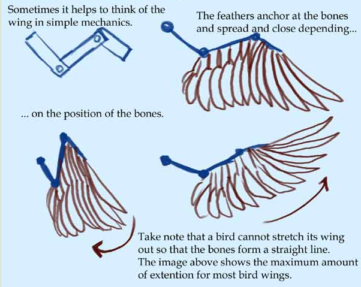And this is a snippet of Nambroth's work.
These two links alone were instrumental in making a system that looked as close to natural as possible, and it was clear that following actual biology really was the only route to do this. While the picture above is brilliant in how it represents the wings in simple mechanics it is a little too simplistic, and wouldn’t work mechanically for our needs. Without adding structure and support to each of the pieces in that drawing, you would just have a very floppy wing that’s being dragged around everywhere. Think of your arms without muscles, for example… Or not, I'm not the imagery police...
Anyway! This support could have come from adding electronics to the wings, like actuators and pistons (which is what Alexis at The Crooked Feather often does), but I was limited by time, materials available, and, well, physics. In the time frame I had, working on a metal version of this was just out of the question, so I used a hardwood as an alternative. This meant that working with the material was relatively easier, but I had to plan ahead to accommodate for the sheer amount of weight that was going to be pulling on and distorting the wood when they were fully extended. For this, a better look at actual bone structure is always nice. You can see some of this in Nambroth’s drawings, but the below image is a little clearer – unfortunately I can’t find the original source for this one but I found it on the 3D modelling program Blender’s forums so, full credit to the original artist of course.

Bone structure of a standard bird wing.
This image directed how I thought about supporting the wing on the back brace (the thing that you actually wear) thanks to how the coracoid and scapula are positioned (long story short, a supporting beam running parallel to the humerus that offers a good hinge point and limits the motion in a natural way anyway). The main inspiration for the final structure came from me altering one of Alexis’ deigns though, mainly because it is brilliantly elegant. The only issue with it was that she designed her structure around metal ‘bones’ while, again, I had to work with wood; this just meant changing distances between connections and a slight change to overall structure. The other problem was the fact that I was making a double set of wings which, as far as I could find, no one had done before, so I also had to figure out how the wings would be laid out in relation to each other. Eventually, I ended up with the below drawing:
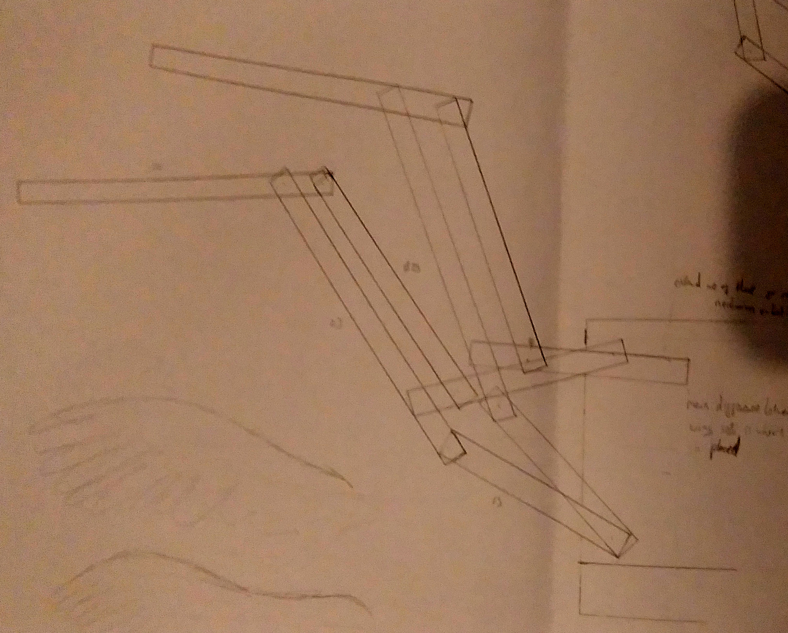Very early sketch of the wing 'bones'.
Which led to the below (very, very rough) scale model (also, apologies for image quality, I was a little limited at the time):
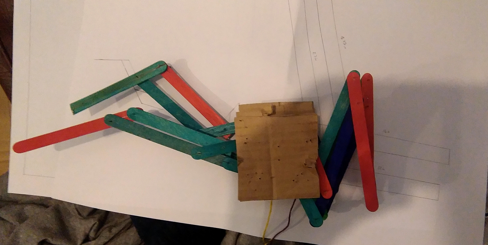A rough scale model with each wing slightly different to test ideas - apologies for the meh camera quality!
Each of the wing structures on that model are very slightly different in their measurements, which was intentional so that I could see what worked best mechanically. With the final measurements locked in from that scale model, I was ready to out together the full size wing structure with a bit of help. No super complicated techniques or anything were used, just keen measurements and some standard tools. Usually I would have had to do all of these using hand tools but I was lucky enough to get to work in a workshop for once, so a Miter saw for most of the cuts and a drill press for the holes. The whole thing is kept together by 3/4 inch bolts (I think, I can't seem to find any of my spares) for easy dismantling. Feel free to have a look through the life size build photos below:
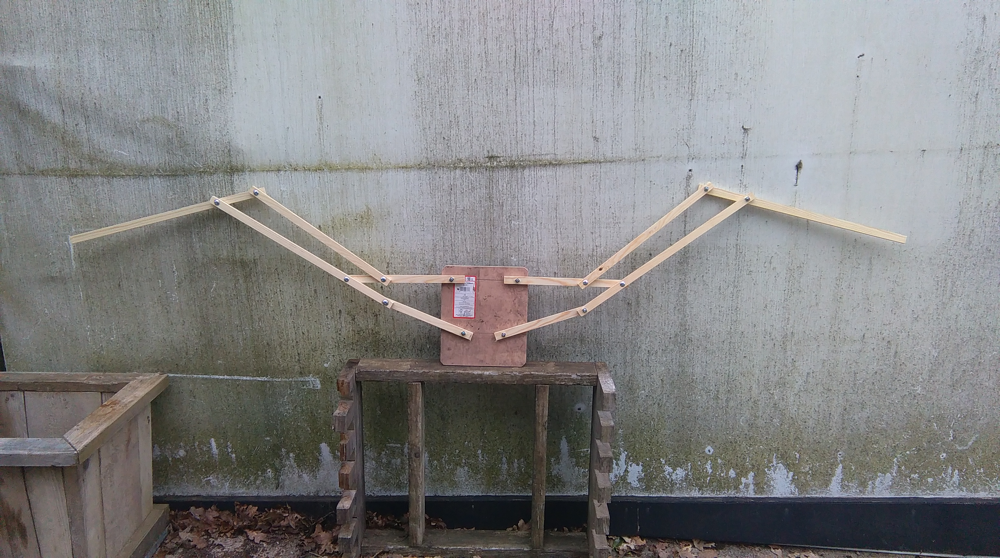One set open...
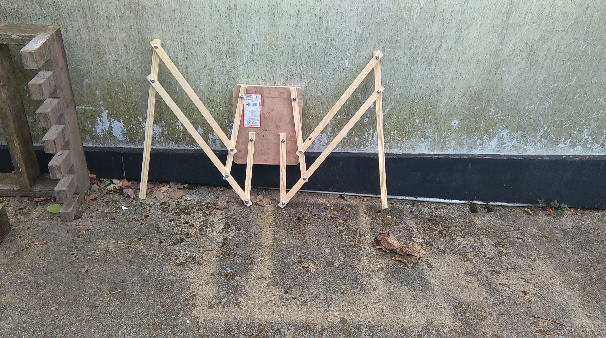One set closed...
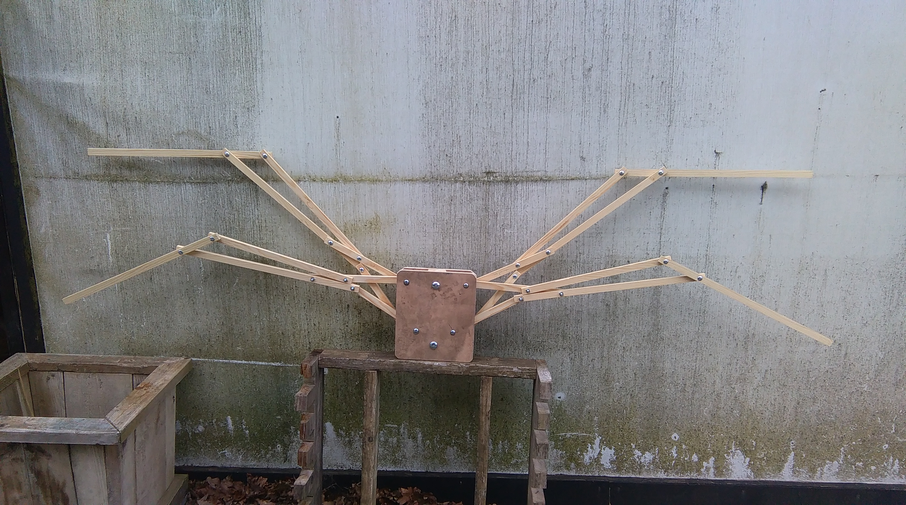Two sets open...
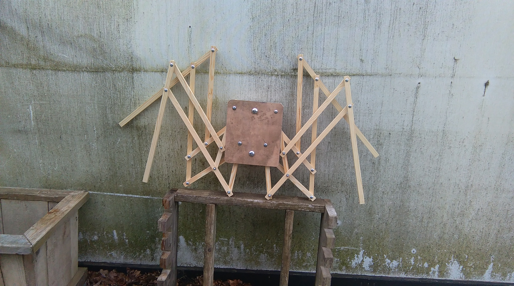Two sets closed!
With these out of the way, I had to focus on the feathers, which was by far the most time consuming part of the entire build. Designing them wasn’t too bad at least, and my initial drawings (now sadly lost) were loosely based on condor wings because of the nice, long, pointy primary feathers, and layered secondary feathers which gives them some nice presence. Condor primaries splay out quite a bit in actual flight, but I didn’t want this so… I didn’t do it. That doesn’t make condor wings any less cool though, as you can see below (image from FLIP and their beautiful work 3d scanning wings)
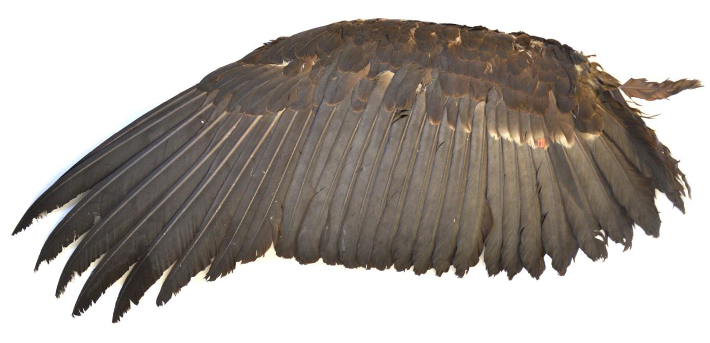A 3D scanned condor wing.
The first step to building the feathers was to make a life-size (or close to it) drawing of the design, which you can see below. I tweaked the design a bit at this stage, and continued to tweak right up to the shoot day.
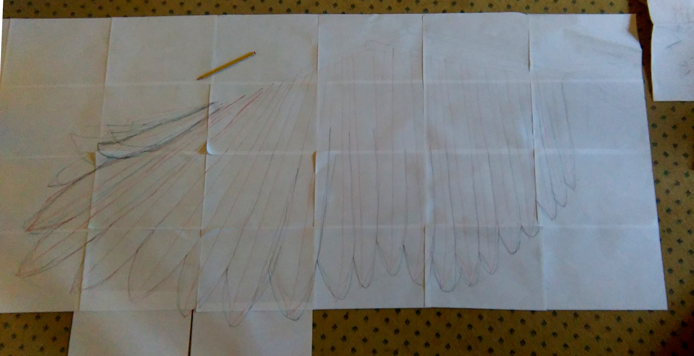A few drafts in on the full size sketch, deviating from the initial condor plan.
Now, onto feather construction! I kind of moved into my friend’s grandma’s house at this point to make use of floor space (which I am immensely grateful for being able to do), and, as you will see in a moment, we needed every inch of it. I will also mention that I made a few small scale feathers before working on the full-size ones, but I won’t detail that process because it’s the same, just much smaller.
Step one was cutting out strips of fabric that were a couple of inches longer and wider than the feather they were designed for. As you can see in the wing image above, there are around 18-24 feathers in a wing depending on your design and each feather requires two strips of fabric. As I was making four of these individual wings, I needed 8 strips of fabric for each feather, resulting in me (and whoever was walking by the room at the time) cutting out about 160 strips of cloth. A little note on the cloth while we’re here, I used cotton broadcloth from FabricUK because broadcloth is much less stretchy than a lot of other fabrics in the price range, the fibres are quite close together so it absorbs the paste in the next step but it doesn’t just leak through, and it is lightweight and thin enough that it alone isn’t a big issue for the skeleton wing structure.
After this, I needed to measure out and cut the steel wire that acted as the core of each feather, and this was the first part that hurt a bit. It was also a great chance to learn the differences between wire thickness measurements in America compared to the UK! I very almost went out and brought wire based on the American system of (American wire gauge; AWG) rather than the British one (Standard wire gauge; SWG) in which the sizes are quite different. An AWG 14, for example is about 1.6mm, while the SWG 14 is about 2mm. I can imagine you’re having a blast reading about wire thickness, so here’s a plot twist in the story for you… No where I could find actually sells wire based on gauge in the UK! Ugh… I ended up going with 3mm thick wire for the big primary feathers (necessary for support), and 1.5mm for the many, many feathers below these which don’t need as much support. You cut them to length based on your drawing but giving a few inches on top, and then you bend that top into a hook – you’ll see why soon. Enjoy the dark photo below (it was literally the middle of the night and deadlines were looming).>
Lengths of cut wire, grouped based on feather type.
The wires and fabric strips were grouped together based on a very simple numbering system: the farthest feather out was labelled P1 (primary 1), the next one down was P2, etc. until we hit the secondaries, at which point we’re onto S1, S2, S3, etc. I mention this here because we’re about to put them together!
This was the really fiddly bit, so I’ll mention materials before I talk about methods. First of all, we needed a big tub of wallpaper paste (or two). I used EasiPaste Ready Mixed Wallcovering Adhesive because of price and consistency; we are using wallpaper paste because it is thicker and less absorbent than thinner adhesives like PVA, but it is still easily spreadable. It also still makes the feather just flexible enough to manipulate and change later on as we need to. Aside from this, all I used was a stiff sponge to actually spread it around.
So, all you really need for this bit is to lay out both of your fabric strips, spread out enough paste that it covers most of each one (leave a little margin at the edges so that you’re not pasting it to the surface below), add just a little more paste in the middle of one, lay the appropriate steel wire length on that centre, carefully lay the other fabric sheet on top so that the two pasted sides are meeting, then very gently ease out the inevitable creases and air bubbles. After that, you need to leave them to dry… All of them… There are so many… Oh God…
Oh hey, drying feathers...
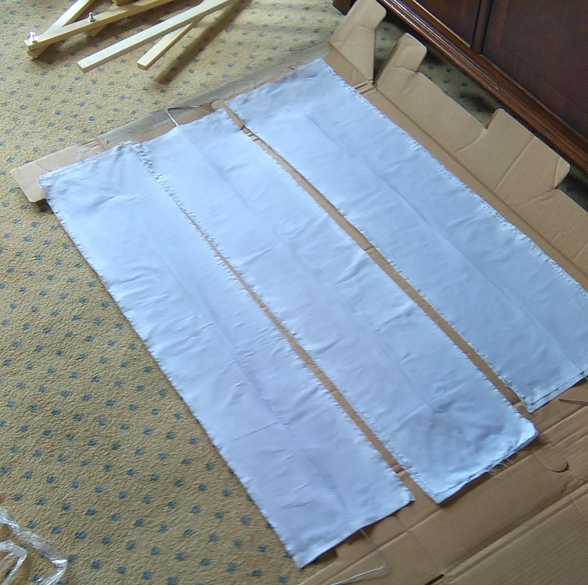Oh, and some more...
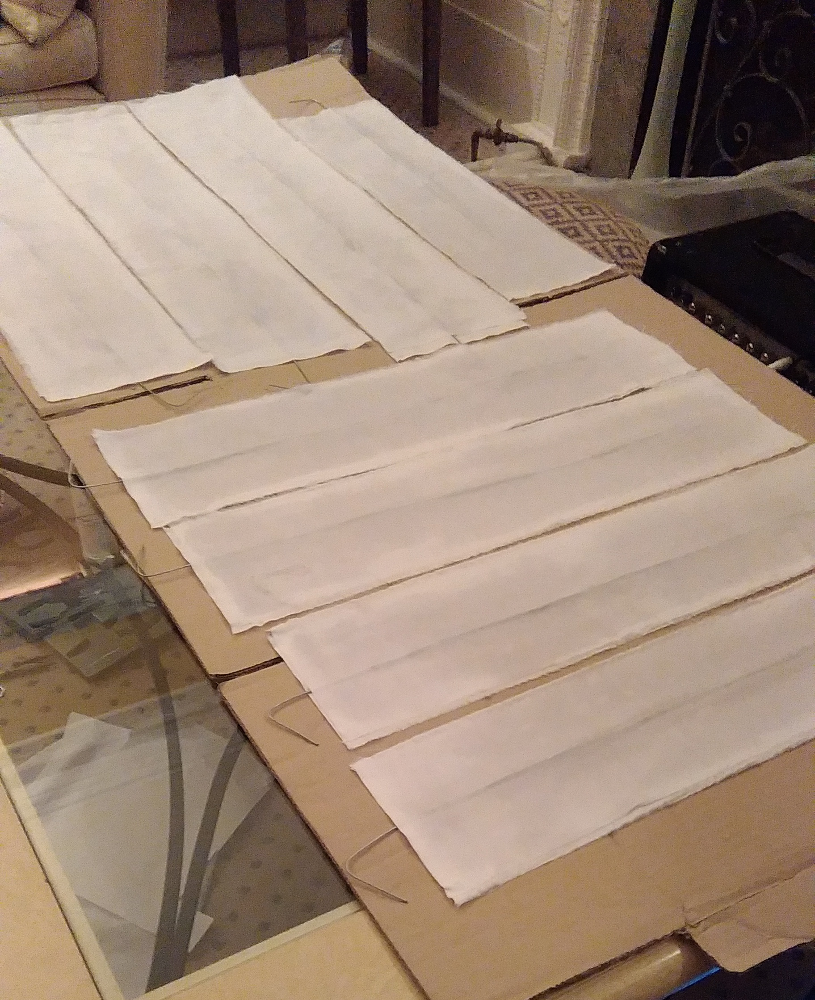Even more...?
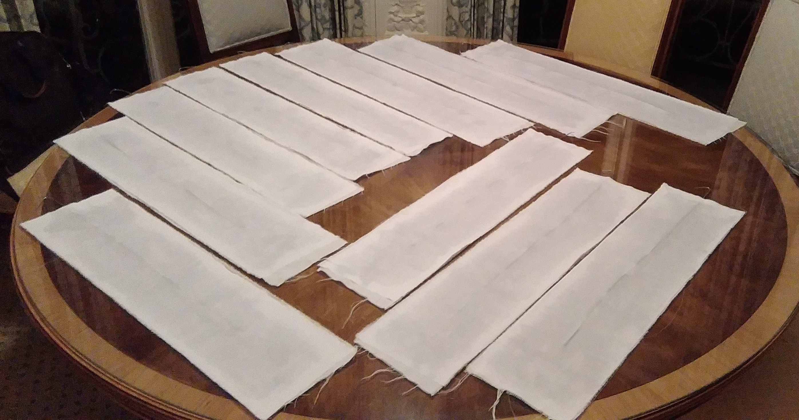So... So many... And these are a very small selection of them!
After they dry I ironed each and every one to remove some of the imperfections from the drying process. Wallpaper paste doesn’t change volume much when it dries, like most adhesives, but this step is super important and you’d be surprised at the mere visual difference that it makes. This step is also super boring, so order a pizza like I did, put on a film and go for it! When you’re done, group the feathers together by their number so that you don’t get confused later on.
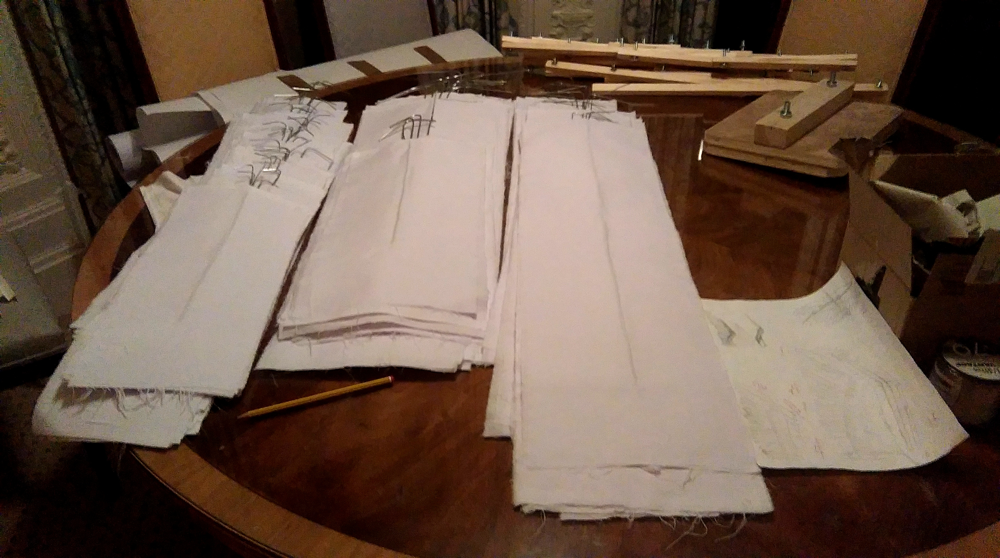The full collection of grouped, ironed feathers.
Next is the bit where they actually look like feathers! Based on the full size drawing I showed you earlier, I traced out a paper template for each feather which would let me draw it onto the ironed rectangle-feathers that we have above. This lets us cut them in roughly the same shape, though you need to ensure that you’re cutting them a little wider than you might want because you can always take away but you can’t just add more fabric after you’ve trimmed it. Don’t worry about being super neat either, nature isn’t!
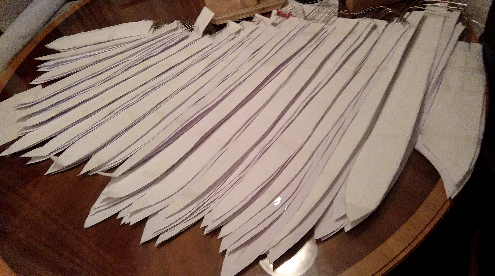And here are those feathers cut out.
Sadly I don’t have pictures for the next step because it was gruelling and long, so you may have to use your imagination…
Mounting the feathers onto the skeleton wings – Are your hands hurting yet? Let’s fix that! Remember how we left some wire at the top of the feathers earlier? Well we did that so that we can bend them into little hoops now so that they can be mounted on the frame. I would recommend bending them around a nail sticking out of wood or something similar and bending it once in one direction, then bending it the exact opposite direction around the nail to make the hoop. Cut off the wire that is overhanging the hoop and flatten the hoop as much as possible and you’re there. This whole thing isn’t too bad on the 2mm wire, but the 3mm wire doesn’t like to cooperate.
Next we need to measure out and mark the points on the skeleton wing where the feathers will attach and I marked this out ages ago in full-size drawing. I still tweaked it from there, but guidance was pretty nice. After you’ve marked them out, you want to drill very shallow guiding holes into the wood to guide your screw AND lower any risk of the wood splitting on you. I actually used an old fashioned hand drill for this because I wanted to be more in control of how deep I went. After you have these holes, screw the feathers on in order through the loops that you made earlier. You can add feathers as you drill holes, or you can add them all at the end, either way works but I would go with caution and constantly check how the feathers will look just to be safe.
Next I used thick fishing wire (because it is see through and very strong) to tie the stems of each feather together right near the top. This is an immensely tricky step because this is where you are basically deciding how the wings will look when you’re done. Tying them together is crucial because it means that the feathers will actually splay out and open in a natural looking way, so constant testing is needed to make sure that it works, everything is in position, and that you’re happy with how the motion ‘feels’.
With that part done, we now need to make the covering that hides the skeleton wing part of the build or, in bird words, adding the covert feathers to our wings. Using some of the broadcloth from earlier (I just had this spare, making these thicker and from different materials might be better if you’re making some for cosplay), I cut out and sewed together a chicken wing-esque shape (the food kind). Like before, cut this out bigger than you need it and trim it down as you need to. You can actually sew bits onto this if you really have to because this is covered by feathers in the next step but it would be nice not to if you can. You can see that I did have to Frankenstein mine together - the bottom left was the first one that I made so it acted as a template for the others, and I sewed the tips onto the others due to size constraints of the material.
Bare wing coverings.
Next we add a hell of a lot of feathers to them! I brought my feathers from feathersuk.com and you need a bunch of ‘normal’ feathers, and a bunch of fluffies for closer to the top. I used white goose nagoire for the longer ones, and white turkey marabou for the fluffies – that’s right, our angel is a hybrid. I used some of the paste from earlier to attach them to the covering.
The most important part about this is that you add the feathers in rows so that you get a real layered effect, as you can see in the actual bird wing pictures and drawing guides above. Birds need this layering so that air runs over the feathers smoothly and it just looks weird if you do it any other way.
Bare wing coverings.
After these dried, I tied them onto the skeleton frame in just a few places so that it didn’t catch on anything when it scrunched up, but still looked fairly natural (the layering of actual feathers helps with this a lot).
With that… We’re pretty much done! The wings are screwed into the back brace as we did earlier, the two back braces are screwed together with a spacing piece of wood in between so the wings don’t smash against each other, and some straps are added with the help of the costume department so that it blends well with everything else, but… Yeah, we have wings!